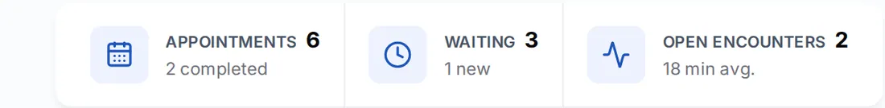

Red Dental Studio · Dashboard



Julián
Confidentally
2026Redesign of a dental practice platform, from the front desk to the dental chair: scheduling, patient records, clinical charting and billing, rebuilt as a working prototype.
- NDA · password
- SaaS
- Healthcare
- Web app
- Lead UX/UI